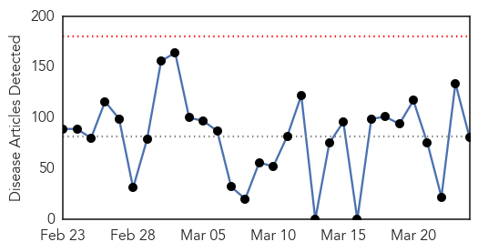
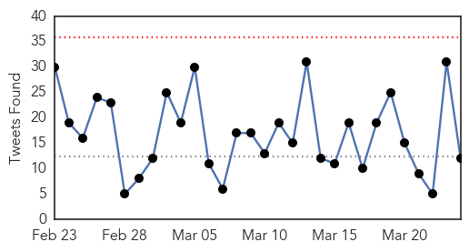
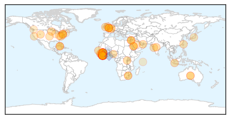
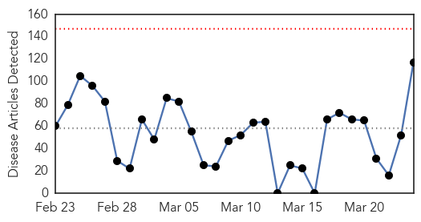
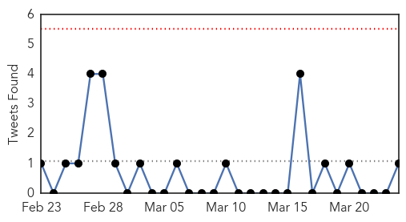

Ebola
30-Day Web Trend
0 alerts, 0 warnings

30-Day Twitter Trend
0 alerts, 0 warnings

Article Locations
Article Confidences
Top Articles:
- 1.000
- Ebola crisis not yet over: Report
- 1.000
- Ebola danger ‘far from over’
- 1.000
- Have We Won The Battle? End May Be In Sight, But Not Yet
- 1.000
- U.N Says Ebola Outbreak Could Be Gone By the Summer
- 1.000
- Ebola danger 'is far from over'
- 1.000
- Thousands left to die as ebola went unchecked
- 1.000
- One-year Ebola reviews by MSF, Oxfam cite early missteps
- 1.000
- WHO and African Governments Blasted for Spread of Ebola
- 1.000
- WHO urges boost in routine-vaccination efforts in West Africa
- 0.999
- Ebola Epidemic is Far from Over
- 0.999
- Ebola Diaries Hitting the Ground Running
- 0.999
- Orlando Bloom Visits Liberia As Ebola Threat Resurfaces In The Country
- 0.999
- Quarantined Compound Closes School to Over 80 Students
- 0.999
- Ebola Outbreak News 2015: Slow International Response Costs Thousands of Lives – M.S.F.
- 0.999
- The Hobbit Actor Orlando Bloom Visits Liberia with UNICEF
- 0.999
- The Courier WHO denies politics swayed Ebola emergency declaration
- 0.999
- Ebola survivor may have infected new Liberia case
- 0.999
- Ebola not yet over despite decline: report
- 0.999
- MSF blasts Guinea and Sierra Leone on ebola cover up « Awoko Newspaper
- 0.999
- Ebola Virus Remains Strong After A Year
- 0.998
- Ebola again in Liberia: Hope dampened but not destroyed
- 0.997
- Cuban Doctors Return Home After Treating Ebola in West Africa
- 0.997
- Ebola outbreak could be over by the summer
- 0.997
- The Chosun Ilbo (English Edition): Daily News from Korea
- 0.996
- Guinea Continues Ebola Fight, Despite Challenges
- 0.996
- Antiseptic shows 99.9% efficacy against Ebola virus
- 0.995
- How Ebola changed the world
- 0.994
- Ebola veterans warn that vigilance is still needed as case numbers drop
- 0.994
- Ebola a systems failure, not perfect storm
- 0.993
- What The Ebola Virus Taught the World One Year Later
- 0.991
- Vaccines & Viruses: Swine flu toll nears 2,000 in India
- 0.991
- Ebola Contained, Senegal Health Minister Eyes Top UN Health Post
- 0.991
- Guinea Continues Ebola Fight, Despite Challenges - Guinea
- 0.991
- WHO denies politics swayed Ebola emergency declaration
- 0.985
- One Doctor's Mission to End Global Health Crises, From AIDS to Ebola
- 0.984
- Orlando Bloom visits Ebola-ravaged Liberia
- 0.981
- UN says Ebola outbreak in West Africa will be over by August
- 0.979
- Foya to Caldwell: History of Ebola Mirrors New Confirmed Patient
- 0.978
- UN says Ebola outbreak in West Africa will be over by August
- 0.970
- WHO Denies that Politics Delayed the Ebola crisis Announcement
- 0.969
- Navigen Announces Phase II NIH SBIR Award for the Advancement of Ebola Virus Therapy
- 0.969
- Press Releases, Houses of the Oireachtas
- 0.963
- MINNESOTA TO EXPAND THE SPREAD OF VACCINE INDUCED DISEASE AND ILLNESS?
- 0.962
- An Ebola outbreak in 1956?
- 0.937
- EurekAlert! Science News
- 0.930
- WHO Denies Politics Swayed Ebola Emergency Declaration
- 0.930
- Liberia: UNICEF Goodwill Ambassador Orlando Bloom concludes four-day visit to Liberia
- 0.925
- Boyfriend infects Ebola victim?
- 0.920
- Ebola report shows that aid funding must be restored
- 0.916
- APG Welcomes Ebola Testing Team Home from Liberia
Showing top 50 articles...
Top Tweets:
- 0.976
- World Health Organization selects UAB grad to lead Ebola fight - Birmingham Business Journal http://t.co/a3ZcW8vTN9 ebola EVD
- 0.927
- As Ebola fades in West Africa, residents face a new crisis: Life after Ebola survivors http://t.co/dSHi3KNOJA
- 0.923
- Official: Ebola Survivor May Have Infected New Liberia Case - ABC News http://t.co/KR732zM82D ebola EVD
- 0.922
- Ebola Diaries: Hitting the Ground Running - Infection Control Today http://t.co/bMAwEm2OVa ebola EVD
- 0.900
- Ebola Update: 24,872 confirmed, probable and suspected cases reported in 3 most affected countries, with 10,311 deaths EbolaResponse
- 0.897
- Ebola Resurfaces in Sierra Leone - http://t.co/FMQyogVq99 http://t.co/Fv1Y3zRRHL ebola EVD
- 0.877
- Military Unit Returns From Running Ebola Labs In Liberia - Baltimore Sun http://t.co/zBBmcJc4uB ebola EVD
- 0.867
- After 3 weeks w/o a reported case of Ebola, Liberia believes surveillance & education key 2 beating epidemic http://t.co/8u7LyaA9Fa
- 0.865
- What Ebola Taught the World One Year Later - TIME http://t.co/EbSKhVqzjD ebola EVD
- 0.840
- RT: Ebola outbreak: 95 new confirmed cases reported in Guinea, highest weekly total for the country in 2015. http://t.co/xceIDkI…
- 0.838
- Fighting Ebola with a holistic vision of big data - TechRepublic http://t.co/tWdsyVcQFm ebola EVD
- 0.811
- WHO Denies Politics Swayed Ebola Emergency Declaration - ABC News http://t.co/7GkAIsvSL2 ebola EVD
- 0.796
- Sexualtransmission of the Ebola Virus : evidence and knowledge gaps http://t.co/Np7r86MA1p
- 0.789
- Ebola veterans warn that vigilance is still needed as case numbers drop - PRI http://t.co/Za54HEAaTM ebola EVD
- 0.687
- CenturyLink Field lights up for Paul Allen's Tackle Ebola project - GeekWire http://t.co/x9CH0nLsuZ ebola EVD
- 0.678
- We Are Not Ready: Ebola Analysis from Front-Line Workers (And Bill Gates) - Wired http://t.co/0Dmy73JgU9 ebola EVD
- 0.666
- West Africa Unprepared for Future HealthCrises Despite Ebola Aid @sciam http://t.co/7saYAt77Mv
- 0.658
- Guinea and Sierra Leone tried to cover up Ebola crisis, says Medecins Sans Frontieres:... http://t.co/Hp4XlzBRFx
- 0.638
- Ebola : Objectif zéro cas http://t.co/QQGjIwE8YC
- 0.628
- Liberia reports first new case of Ebola in 27 days. http://t.co/iNZdi5EQVC
- 0.611
- We're getting there -> Only 2 new confirmed cases of Ebola in SierraLeone on 23 March EbolaResponse http://t.co/9dyWIc2Rvc
- 0.605
- RT: Ebola outbreak: Recollections, predictions http://t.co/wWeaSQmBny via
- 0.594
- 2) Bioethics and Ebola. http://t.co/v8R7E5Ov6M by
- 0.554
- An amazing read from on one woman's quest for work during Liberia's Ebola outbreak http://t.co/bqqgUJDg6d
- 0.531
- Sierra Leone orders three-day lockdown against Ebola:... http://t.co/sRcU47G6JC
- 0.522
- Sierra Leone, Guinea & Liberia to meet in efforts to map a way forward for post Ebola reconstruction http://t.co/5itaTVRR44
- 0.511
- RT: There is a danger that Ebola could flare up in West Africa. We must increase mass communications to prevent another cri…
- 0.505
- Radio programmes. Kick Ebola From Liberia - Full Episodes http://t.co/3x3F2lRDgu
Unknown
30-Day Web Trend
0 alerts, 0 warnings

30-Day Twitter Trend
0 alerts, 0 warnings

Article Locations

Article Confidences
Top Articles:
- 0.962
- Campaign to get rid of lymphatic filariasis
- 0.961
- Focus on prevention to stop tuberculosis
- 0.958
- Tuberculosis (TB) on the rise in Northern Ireland
- 0.935
- Cairns students continue to be monitored for Tuberculosis
- 0.919
- City Tops List with Highest no. of TB Cases in State
- 0.917
- Chicago Tribune
- 0.917
- Chicago Tribune
- 0.917
- Chicago Tribune
- 0.917
- Chicago Tribune
- 0.917
- Chicago Tribune
- 0.917
- Chicago Tribune
- 0.917
- Chicago Tribune
- 0.917
- Chicago Tribune
- 0.917
- Chicago Tribune
- 0.917
- Chicago Tribune
- 0.917
- Chicago Tribune
- 0.917
- Chicago Tribune
- 0.917
- Chicago Tribune
- 0.917
- Chicago Tribune
- 0.917
- Chicago Tribune
- 0.917
- Chicago Tribune
- 0.917
- Chicago Tribune
- 0.917
- Chicago Tribune
- 0.917
- Chicago Tribune
- 0.917
- Chicago Tribune
- 0.917
- Chicago Tribune
- 0.917
- Chicago Tribune
- 0.917
- Chicago Tribune
- 0.917
- Chicago Tribune
- 0.917
- Chicago Tribune
- 0.917
- Chicago Tribune
- 0.917
- Chicago Tribune
- 0.917
- Chicago Tribune
- 0.917
- Chicago Tribune
- 0.917
- Chicago Tribune
- 0.917
- Chicago Tribune
- 0.917
- Chicago Tribune
- 0.917
- Around 13000 Afghans die of TB every year
- 0.911
- Childhood TB: The hidden epidemic
- 0.910
- The world windows to Thailand
- 0.907
- What the horse owner should know about Equine Herpes Virus-1
- 0.902
- CDC Receives Air For Help From Indiana For Possible HIV Outbreak
- 0.901
- Flu Concerns: Authorities extend school vacation amid URI outbreak - Health
- 0.899
- Amref Health Africa calls for greater synergy and investment to reach, treat and cure every TB case - World
- 0.895
- HIV outbreak spreading fast across southern Indiana
- 0.891
- Health News
- 0.891
- Health News
- 0.873
- TB still lurking in the shadows[1]- Chinadaily.com.cn
- 0.873
- TB still lurks in the shadows in spite of global battle --China Economic Net
- 0.862
- NewsDaily
Showing top 50 articles...
Top Tweets:
- 0.820
- RT: NEWS SCAN: Saudi MERS cases; Adjuvanted anthrax vaccine; TB drug availability; Global flu situation http://t.co/DkBfCeX9pw
- 0.801
- Hasta cierto punto Lucifer fue el primero en demandar igualdad de derechos.
- 0.608
- More MERS: 3 more cases reported by KSA today & 1 death. 2 of the cases are expats. Expats travel. Will MERS? http://t.co/s1Kxq109jr